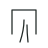
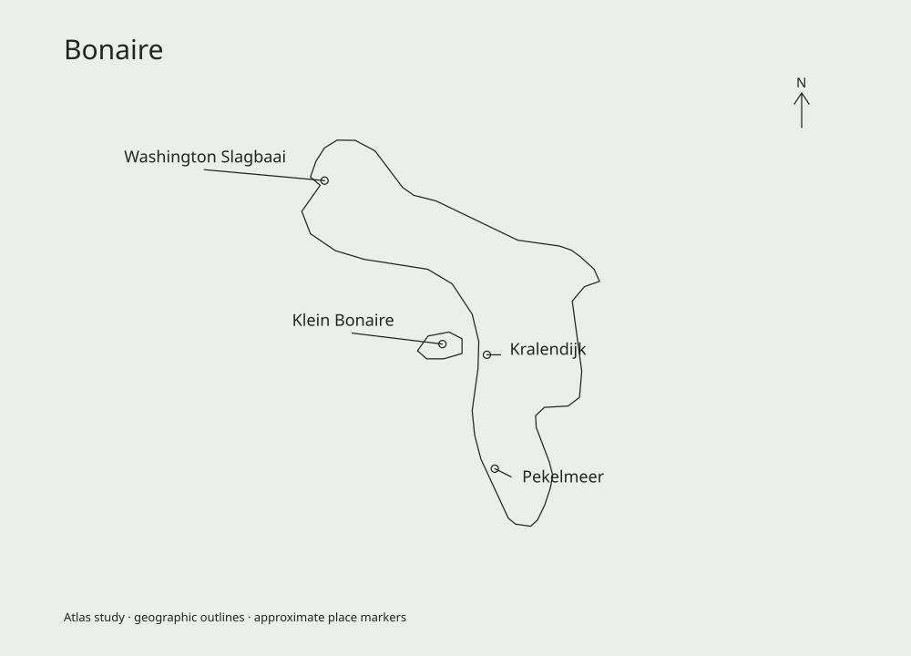

AURORA
Private
Een sanctuary, geen kliniek.
Conceptpresentatie voor oprichters en partners · 8 oktober 2026 · geen investeringsaanbod01
Een sanctuary, geen kliniek.
Een private omgeving, één vaste begeleider van intake tot dag 180 en maximaal zes deelnemers per editie. De individuele invulling begint bij het intakegesprek.
Intake en screening, doelen en patronen in kaart, een eigen AURORA Plan.
 Dag 1–7 op locatie
Dag 1–7 op locatieVertragen en eerlijk kijken. Dag 7 bewust leeg.
Patronen, relaties, emoties en verantwoordelijkheid.
Het leven thuis opnieuw vormgeven; integratieplan.

± 5 maanden thuis1-op-1 sessies, groepssessies, evaluaties op dag 30, 60, 90 en 180.
De eerste editie van de collectie.
Koraalsteen, zoutvlaktes en open water.

Riviersteen, ochtendmist en gelaagde heuvels.
Jadegroen water en vulkanisch landschap.
Wit pleisterwerk, zilvergroene olijven en zee.